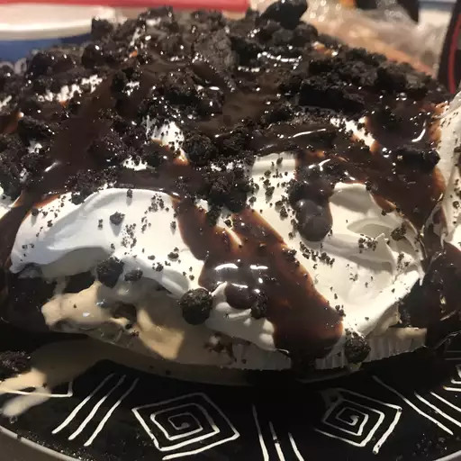

Mud Pie

Description
This mud pie recipe is a dynamite version of a favorite dessert made by layering ice cream, chocolate fudge sauce,
and cookies!
Ingredients
- 1 (6 ounce) chocolate sandwich cookie crumb crust (such as an OREO® crust)
- 1 quart coffee ice cream, divided
- 1 (12 ounce) package miniature chocolate chips
- 1 (12 ounce) jar hot fudge topping
- ½ (18 ounce) package crushed chocolate sandwich cookies, divided
- 1 (8 ounce) container frozen whipped topping, thawed
- ¾ cup chocolate syrup